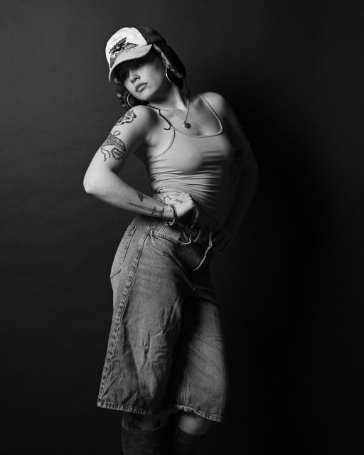
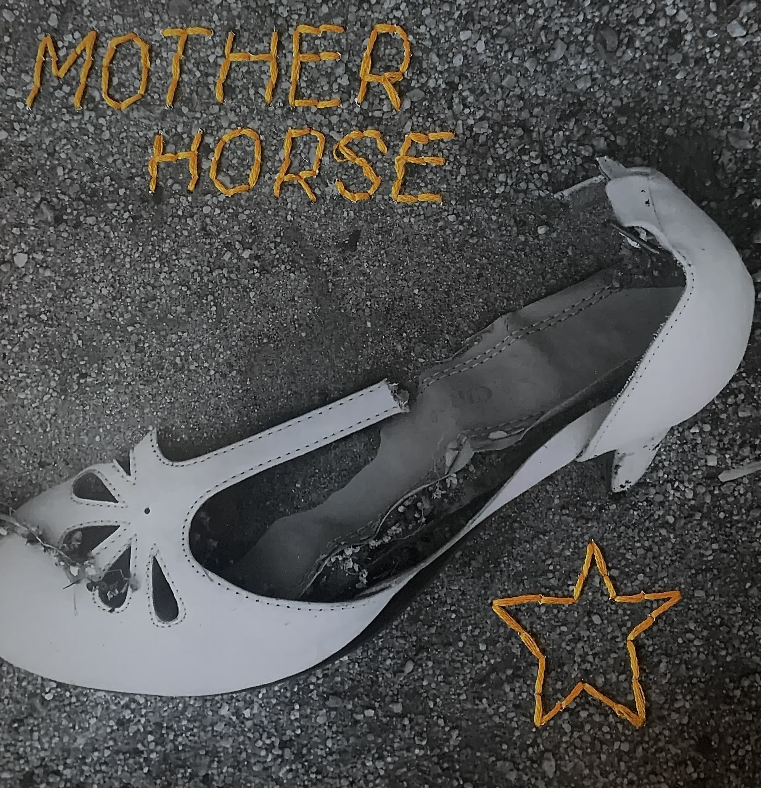

I've been taking pictures my whole life. I was given my first camera by my father when I was a little kid. The tradition of photography in my family goes as far back to my great-grandfather who started a photography studio in my hometown in 1913. Over the years, I've greatly improved my craft. When I lived in Binghamton, I would set up a makeshift studio in my apartment to take portraits. I started with a lot of self-portraits, but eventually broadened my subject range to friends and fellow photographers. Here is a picture of Leah—the only shoot I've done since moving back to the Hudson Valley a few years ago. I've known her for years from the local music scene and it was nice to reconnect and break out my gear again.

I've also been into music my whole life. Drawn to music since I was a kid, I started learning the guitar when I was 9 years old. There wasn't too much of a local scene where I grew up, but we made do and threw some really awesome shows. The band I had in high school fizzled out my junior year. I didn't have a band until I finished undergrad—specifically staying in Binghamton to make this happen. There is an amazing music scene up there and I was able to have a few bands of my own and contribute to many projects. Working at the local Guitar Center further entrenched me in the community and allowed me to try out and experiment with some sick gear. The work I'm most proud of is with my band Mother Horse. We rose from the ashes of another band we were all in to put out an album together—"NO FENCES, ONLY FREEDOM". The album cover is a picture I took that my bandmate printed out, sewed into, and scanned. Clicking the album will take you to Spotify.